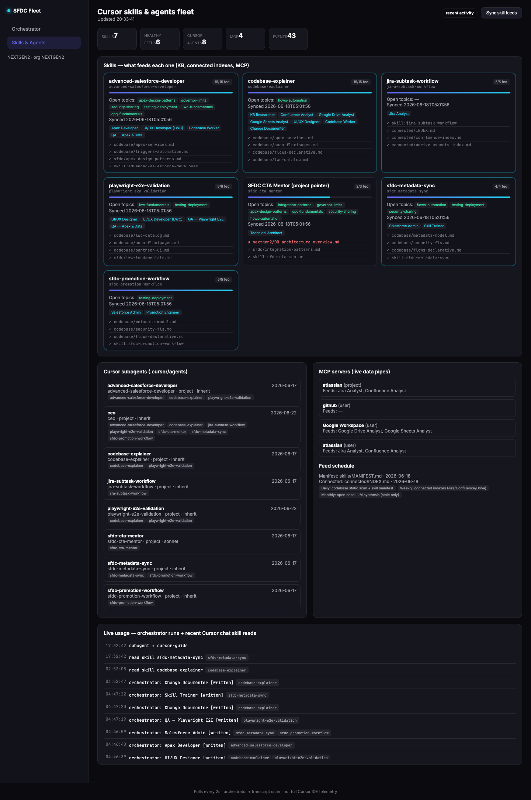
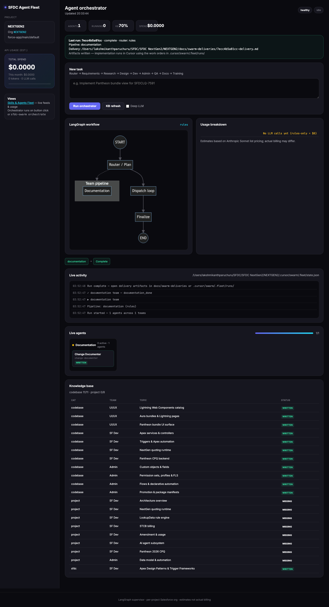

How we turned a large Salesforce DX monorepo into a multi-agent agency — with a live FleetView dashboard, token-aware knowledge refresh, and plain-English delegation.
If you work on a mature Salesforce org — thousands of Apex classes, CPQ, custom LWCs, Jira epics, and multiple sandboxes — a single AI chat thread stops scaling fast. We built an SFDC Agent Swarm: a CEO-style orchestrator in Cursor, specialist agents with skills, a LangGraph planning pipeline, and a local FleetView dashboard so humans can see what the swarm knows and what it is doing.
A mature Salesforce DX repo is a real production-scale project: thousands of Apex classes, dozens of LWCs, CPQ, billing, and custom product models. Developers were already using Cursor, but:
We wanted something closer to an agency: a lead who routes work, specialists who stay in their lane, and a knowledge layer that refreshes without burning tokens every day.
.cursor/agency/, AGENTS.md)force-app/, indexes Jira/Confluence, syncs skill feedshttp://127.0.0.1:8765.
flowchart TB User["Developer in Cursor"] --> CEO["CEO rule / agency-swarm-cursor"] CEO --> Jira["jira-subtask-workflow"] CEO --> Dev["advanced-salesforce-developer"] CEO --> Arch["sfdc-cta-mentor"] CEO --> Sync["sfdc-metadata-sync"] CEO --> Promo["sfdc-promotion-workflow"] CEO --> QA["playwright-e2e-validation"] CEO --> Docs["codebase-explainer"] Orch["sfdc-swarm orchestrate"] --> Plan["LangGraph plan + dispatch"] Plan --> WO["Work orders in .fleet/runs/"] WO --> Dev KB["Knowledge Swarm"] --> Skills["~/.cursor/skills/"] KB --> Fleet["FleetView dashboard"]
| Agent | When it owns the work |
|---|---|
jira-subtask-workflow | Reading epics/stories, creating Dev Task + PDS subtasks, tracking AC |
advanced-salesforce-developer | Apex, LWC, CPQ, triggers, bulkification, deploy prep |
sfdc-cta-mentor | Architecture blueprints, LDV, integration trade-offs |
sfdc-metadata-sync | Retrieve-first, delta sync, manifest hygiene |
sfdc-promotion-workflow | Sandbox → UAT promotion, SFDC-CRM-SFDX handoff |
codebase-explainer | HTML deep dives, architecture docs, teaching |
playwright-e2e-validation | Playwright E2E, LWC Jest, Apex test runs |
Open Cursor chat and describe the task like you would to a project lead:
Implement quote line editor enhancement for PROJ-1001. Retrieve latest LWC from the sandbox, match Jira AC, then prepare promotion notes.
The agency-swarm-cursor rule (Apply Intelligently) acts as CEO and delegates to specialists. Editing files under force-app/ auto-attaches the Salesforce agency context.
Force CEO mode anytime: @agency-swarm-cursor
Never hardcode org aliases. Always:
sfdc-swarm context
This reads .sf/config.json in the project and prints targetOrgAlias, source path, and project root.
sfdc-swarm orchestrate "Implement MAX bundle QCP changes and document verification steps"
Output lands in:
.cursor/swarm/.fleet/runs/<run_id>/ — PLAN, work orders per teamdocs/swarm-deliveries/<run_id>-delivery.md — human-readable summaryOpen the work order (e.g. work-apex-developer.md) and launch the matching Cursor subagent with that file as context.
| Tier | Command | Cost |
|---|---|---|
| Daily | sfdc-swarm skill-refresh --tier daily | 0 LLM tokens — static codebase scan |
| Weekly | sfdc-swarm skill-refresh --tier weekly | 0 tokens — Jira/Confluence indexes via MCP checklists |
| Monthly | sfdc-swarm skill-refresh --tier open_deep | Low — stale-topic LLM synthesis only |
| Command | Purpose |
|---|---|
sfdc-swarm serve | Start FleetView at port 8765 |
sfdc-swarm context | Show project org + paths |
sfdc-swarm orchestrate "…" | LangGraph supervisor pipeline |
sfdc-swarm skill-refresh --tier weekly | Refresh skill ↔ KB links |
python3 tools/sfdc-knowledge-swarm/agency_cursor_sync.py | Regenerate agency folders from registry |
FleetView is a local HTTP server (serve_fleet.py) that shows swarm health, skill feed coverage, active agents, orchestrator runs, and KB progress. It does not call Cursor APIs — it is the human control plane.


sfdc-swarm serve then open http://127.0.0.1:8765/skills-fleet.html. Leave the terminal open while using it. Stop with: lsof -ti:8765 | xargs kill -9
The framework is designed to be global (one install) and per-project (each DX repo gets its own KB and fleet state).
cd tools/sfdc-knowledge-swarm ./install-global.sh pip install -r requirements.txt
This copies the swarm to ~/.cursor/sfdc-knowledge-swarm and adds the sfdc-swarm CLI to ~/.local/bin.
Your repo needs:
AGENTS.md # agency entry point .cursor/agency/ # manifesto, chart, per-agent instructions .cursor/agents/*.md # Cursor subagent definitions .cursor/rules/agency-swarm-cursor.mdc .cursor/rules/agency-swarm-salesforce-files.mdc tools/sfdc-knowledge-swarm/ # project-local copy (or symlink to global) knowledge-base/ # per-project KB output .cursor/swarm/.fleet/ # run state
Edit tools/sfdc-knowledge-swarm/agents_registry.py — map teams, agents, Cursor subagent names, skills, and MCP tools. Then sync:
python3 tools/sfdc-knowledge-swarm/agency_cursor_sync.py
agency-swarm-cursor.mdc to Apply Intelligently (not Manual)agency-swarm-salesforce-files.mdc auto-attaches on force-app/ edits~/.cursor/skills/ (advanced-salesforce-developer, sfdc-metadata-sync, etc.)Each project resolves its default org from .sf/config.json. Optional overrides in .cursor/sfdc-project/config.json. The CEO and all skills must call sfdc-swarm context — never hardcode org aliases or record IDs.
cp framework/launchd/com.agency-swarm.skill-refresh-daily.plist ~/Library/LaunchAgents/ launchctl load ~/Library/LaunchAgents/com.agency-swarm.skill-refresh-daily.plist
Daily = free static scan. Weekly = connected indexes. Monthly = small LLM budget for stale topics only.
Connect Atlassian + Google Workspace MCP in Cursor for live Jira/Confluence/Sheets reads. The requirements team briefs reference these; without credentials, the swarm writes MCP checklists instead.
| Mode | Entry | Graph | Output |
|---|---|---|---|
| Supervisor orchestrator | sfdc-swarm orchestrate or FleetView Run Orchestrator |
plan → dispatch (requirements → design → dev → admin → QA → docs) → finalize | Work orders + docs/swarm-deliveries/*.md |
| Codebase KB swarm | sfdc-swarm dev-once or FleetView Run Swarm |
plan → ui_ux → sf_dev → sf_admin → index | knowledge-base/codebase/*.md |
Important design choice: Python LangGraph is the planning plane. Apex/LWC edits, deploys, and tests happen in Cursor via subagents and skills. The orchestrator produces structured handoffs — it does not replace the IDE.
sequenceDiagram participant Dev as Developer participant Fleet as FleetView participant Orch as LangGraph Orchestrator participant Cursor as Cursor + Subagents participant Org as Salesforce Org Dev->>Fleet: Run orchestrator with Jira epic Fleet->>Orch: POST /api/orchestrate Orch->>Orch: plan + dispatch teams Orch-->>Dev: work-apex-developer.md, qa-*.md Dev->>Cursor: Launch advanced-salesforce-developer Cursor->>Org: retrieve / deploy (with approval) Cursor-->>Dev: code + tests + HTML explainer
This page is self-contained HTML with embedded screenshots under docs/explainers/assets/swarm-blog/. To publish:
assets/swarm-blog/ folder to your internal wiki or static site.